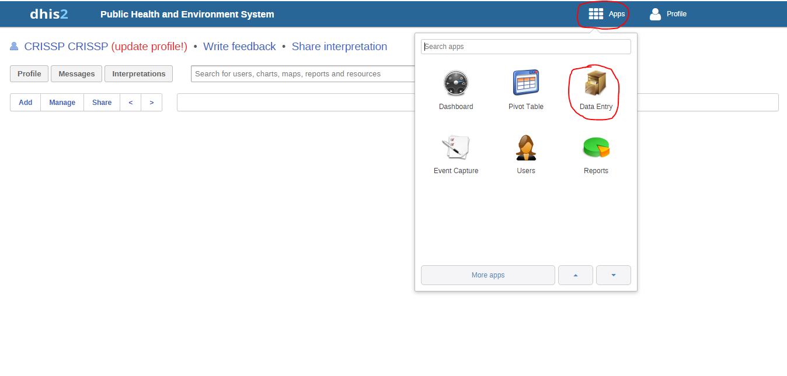
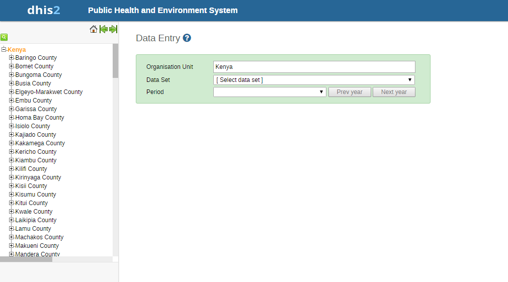

Getting Started¶
System Log in¶
You are required to provide your username and password in order to access the system. Figure 1 below is a screenshot of the start page/login page .Once logged in, the user can see their dashboard because this is the default landing page. .. image:: _img/login.png
Data Entry¶
The PHES data entry module is designed in such a way that an Implementing Partner can only enter their data. PHES datasets were migrated from KePMS, retaining dataset names and look and feel as were in KePMS. After logging into the system, hover mouse pointer/click on the Apps icon on the far left as shown on the figure below. On the dropdown that appears, click on Data Entry icon.
This navigates to the data entry page, as shown on the figure below. For data entry forms to appear, you will be required to first select an organization unit/facility you are reporting for on the left panel, the dataset, reporting period and the implementing partner you are reporting for, which comes up after selecting the organization unit, Dataset and period that the user is reporting for.
